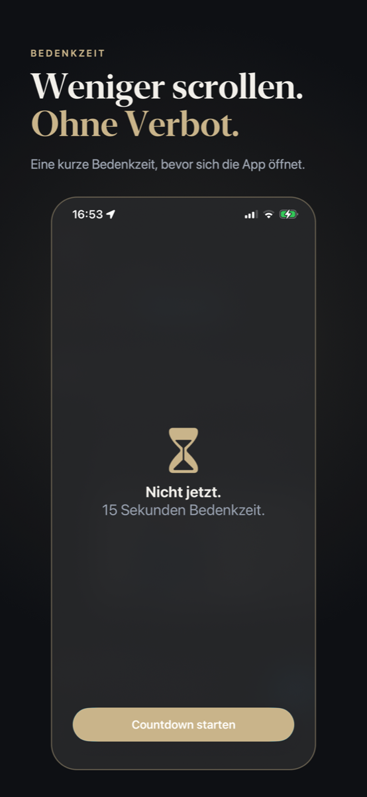
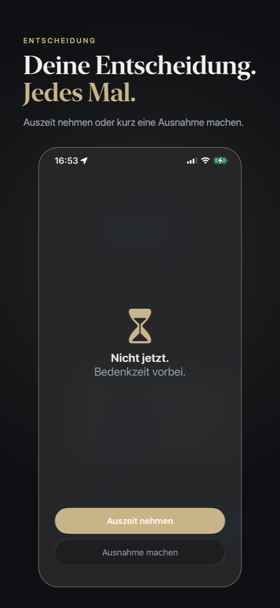
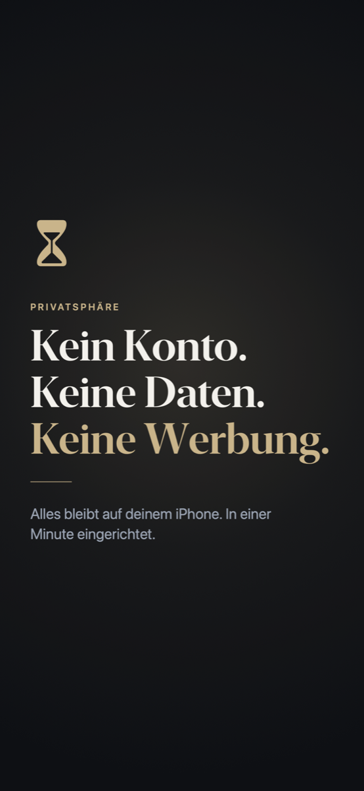

Abends das Handy weglegen, ohne Kampf mit der Willenskraft.
Auszeit hält die Apps, die dich abends festhalten, zu festen Zeiten an. Öffnest du eine davon, zeigt dein iPhone zuerst eine kurze Bedenkzeit. Danach entscheidest du bewusst: Auszeit nehmen oder eine Ausnahme machen. Kein Verbot, keine Tricks, nur ein Moment zum Nachdenken.
Gratis mit einer Auszeit für bis zu zwei Apps. Mehr mit Auszeit Plus, als Jahres- oder Monatsabo.



So funktioniert es
- Zeitfenster festlegen, zum Beispiel 21:00 bis 07:00, an den Tagen, die du willst.
- Apps auswählen. Auszeit nutzt dafür die Bildschirmzeit deines iPhones.
- Ab dann übernimmt iOS: Die Bedenkzeit greift pünktlich, auch wenn Auszeit geschlossen ist.
- Nach einer Ausnahme bleibt die App ein paar Minuten offen, dann gilt wieder die Bedenkzeit.
- Widget für den Home-Bildschirm mit dem Stand von jetzt.
Kein Konto. Keine Daten. Keine Werbung.
Kein Account, kein Server, keine Analyse. Alles bleibt auf deinem iPhone. Welche Apps du wählst, speichert Auszeit nur als verschlüsselte Kennungen von iOS. Auszeit sieht nicht, wie lange du Apps nutzt, und zeichnet nichts auf.
Ehrlich gesagt
Auszeit ist ein Hilfsmittel, kein Schutz vor dir selbst. Jede Auszeit lässt sich jederzeit ausschalten. Auszeit pausiert Apps, keine Webseiten.
Presse
Material für Berichte, ohne Rückfrage verwendbar. Fragen und Testzugänge: apps@nxtchange-consulting.com.
Kurztext
Auszeit ist eine iPhone-App aus Graz, die gewählte Apps zu festen Zeiten anhält und eine kurze Bedenkzeit dazwischenschiebt. Nutzer entscheiden danach bewusst: Auszeit nehmen oder eine Ausnahme machen. Die App braucht kein Konto, keinen Server und keine Analyse; alle Daten bleiben auf dem Gerät. Auszeit ist gratis mit einer Auszeit für bis zu zwei Apps, Auszeit Plus erweitert den Umfang. Anbieter ist nxtChange Consulting FlexCo.
Eckdaten
- Plattform
- iPhone, iOS 17 oder neuer
- Veröffentlicht
- 8. Oktober 2026, Version 1.0
- Länder
- 38 europäische Länder, Deutsch und Englisch
- Preis
- Gratis; Auszeit Plus als Jahres- oder Monatsabo, Preise in der App
- Anbieter
- nxtChange Consulting FlexCo, Graz